Les coffres personnels peuvent être connectés à un système de stockage afin de faciliter la gestion et l’organisation de vos objets.
Cette connexion peut s’effectuer avec différents types de contenants, tels qu’un coffre, un coffre piégé ou encore un tonneau, offrant ainsi une grande flexibilité.
Grâce à cette fonctionnalité, vous pouvez adapter votre système de stockage à vos besoins spécifiques, optimiser l’espace disponible et conserver vos items de manière pratique, efficace et sécurisée.
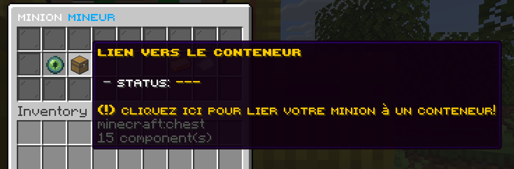
Les coffres personnels peuvent être orientés dans plusieurs directions, offrant ainsi une grande flexibilité dans leur placement.
Les positions possibles incluent le Nord, l’Est, le Sud et l’Ouest, ce qui vous permet d’adapter facilement l’orientation selon l’agencement de votre base, la disposition des autres coffres ou simplement vos préférences esthétiques.
Cette fonctionnalité rend le stockage plus pratique et vous donne un contrôle total sur l’organisation de votre espace.
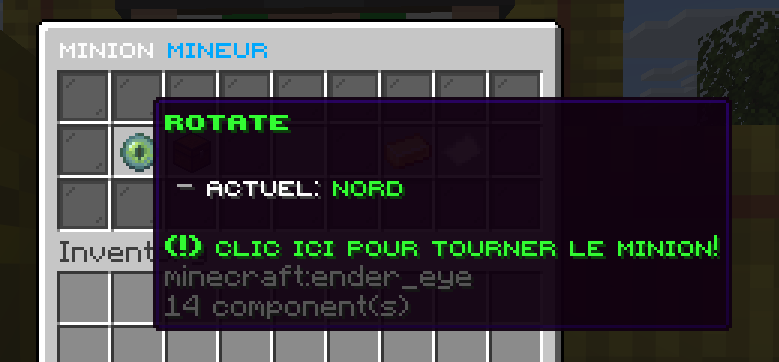
Ils peuvent être améliorés grâce au système de niveaux « Minions level ».
Cette amélioration ne nécessite pas d’argent, mais dépend des actions effectuées par les minions :
par exemple, un Minion Miner doit miner un certain nombre de blocs, tandis qu’un Minion Fermier doit récolter un nombre défini de cultures...
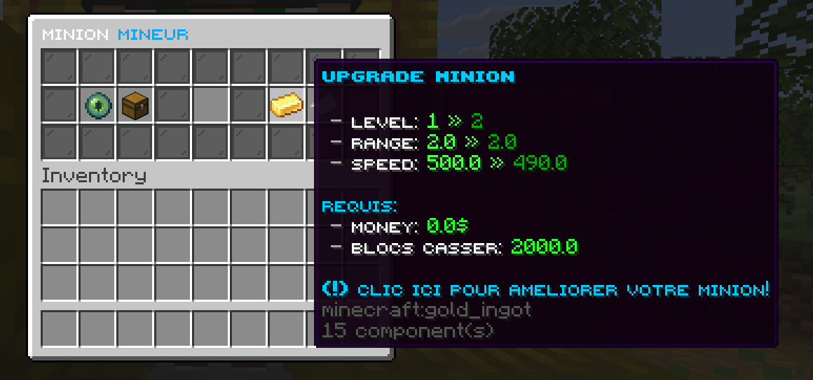
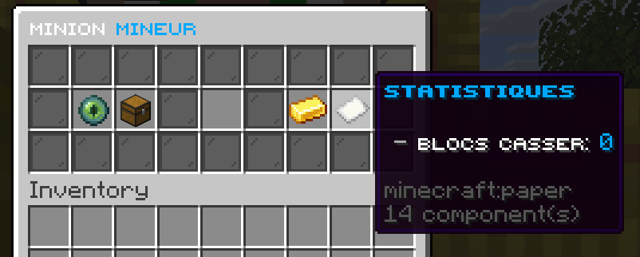
Il existe une limite au nombre de minions que vous pouvez poser simultanément.
Cette restriction garantit une gestion équilibrée et efficace de vos ressources.
Pour augmenter cette limite, il vous suffit d’améliorer votre rang grâce à la commande /rang, ce qui vous permettra de déployer davantage de minions et d’optimiser votre production.
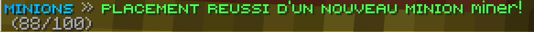
Enfin, chaque minion nécessite un objet de prédilection pour accomplir correctement ses tâches.
Cet objet ne perd pas de durabilité, mais il est indispensable pour que le minion fonctionne efficacement et produise les ressources prévues.
Voici les correspondances entre chaque type de minion et son objet :
- Minion Mineur : pioche
- Minion Fermier : houe
- Minion Bûcheron : hache
- Minion Chasseur : épée
- Minion Pêcheur : canne à pêche
- Minion Vendeur : arc
- Minion Crafteur : l’objet qu’il doit fabriquer (par exemple, pour créer de la bone meal à partir d’os, équipez-le d’os)
- Minion Collecteur : pelle
Cette liste permet de préparer correctement vos minions et d’optimiser leur efficacité pour automatiser vos récoltes et vos productions sur le serveur.
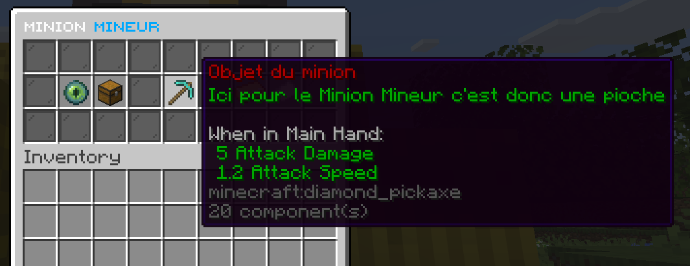
Pour obtenir des minions, vous devez posséder une clé Minion et l’utiliser pour ouvrir la caisse Minions.
Chaque ouverture vous permettra de récupérer un minion aléatoire, prêt à être équipé de son objet de prédilection pour commencer à travailler.
Cette mécanique vous offre une manière simple et progressive de constituer votre collection de minions et de développer vos ressources automatiquement sur le serveur.
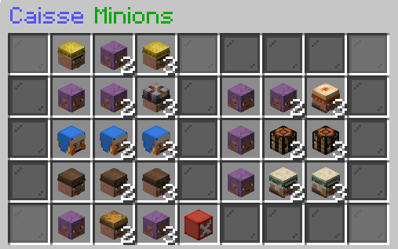
Ce minion est particulièrement utile dans les champs, où il s’occupe automatiquement des cultures. Il fonctionne à l’aide d’une houe, qui lui permet d’effectuer ses récoltes sans perdre de durabilité.
Avec le système de niveaux, plusieurs améliorations sont débloquées, notamment la réduction du temps entre chaque récolte ainsi que l’augmentation du rayon de collecte, rendant le minion de plus en plus efficace au fil de sa progression.
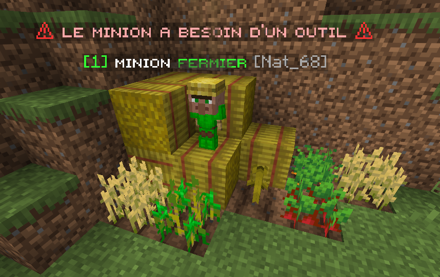
Ce minion est particulièrement utile dans les générateurs à minerais, où il se charge automatiquement de miner les blocs.
Il utilise une pioche comme objet principal, sans consommation de durabilité.
Grâce au système de niveaux, ses performances s’améliorent progressivement, notamment avec la réduction du temps entre chaque minage ainsi que l’augmentation du rayon de collecte, ce qui le rend de plus en plus efficace.
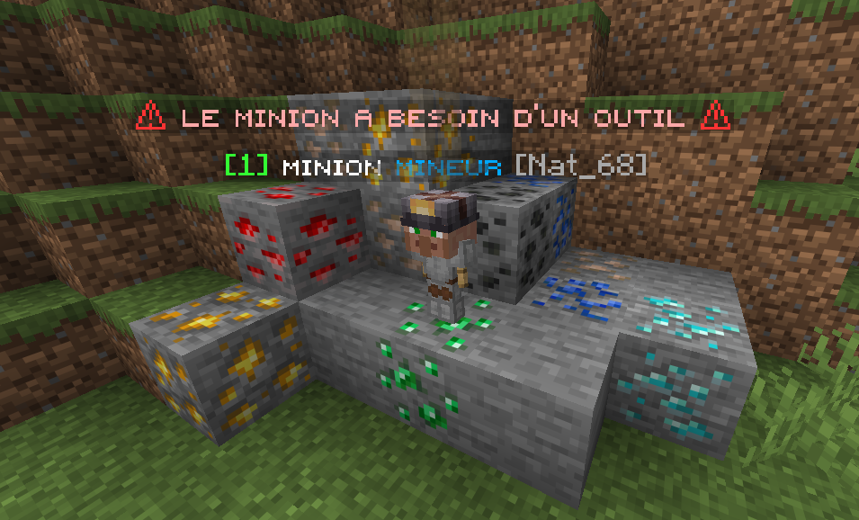
Ce minion est particulièrement utile dans les forêts, où il se charge de couper automatiquement les arbres.
Il utilise une hache comme objet principal, sans consommation de durabilité.
En montant de niveau, le minion gagne en efficacité grâce à la réduction du temps entre chaque récolte ainsi qu’à l’augmentation du rayon de collecte, ce qui permet une production plus rapide et plus étendue.
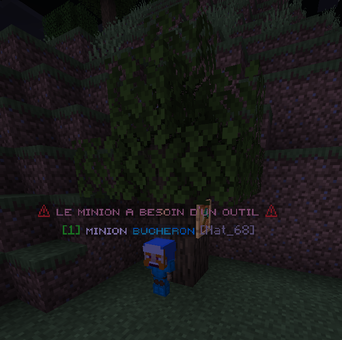
Ce minion est particulièrement utile avec les spawners, où il élimine automatiquement les entités. Il utilise une épée comme objet principal, sans consommation de durabilité.
Avec la montée en niveau, ses performances s’améliorent grâce à la réduction du temps entre chaque coup ainsi qu’à l’augmentation du rayon d’abattage, rendant le minion de plus en plus efficace.
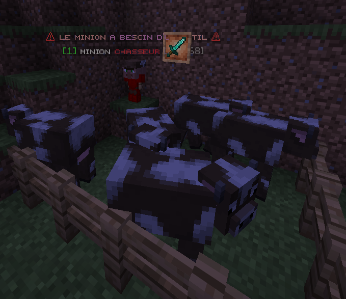
Ce minion est particulièrement utile près des rivières, où il s’occupe automatiquement de la pêche.
Il utilise une canne à pêche comme objet principal, sans consommation de durabilité.
En progressant dans les niveaux, son efficacité augmente grâce à la réduction du temps entre chaque poisson pêché ainsi qu’à l’augmentation du rayon de collecte, permettant une récolte plus rapide et plus étendue.
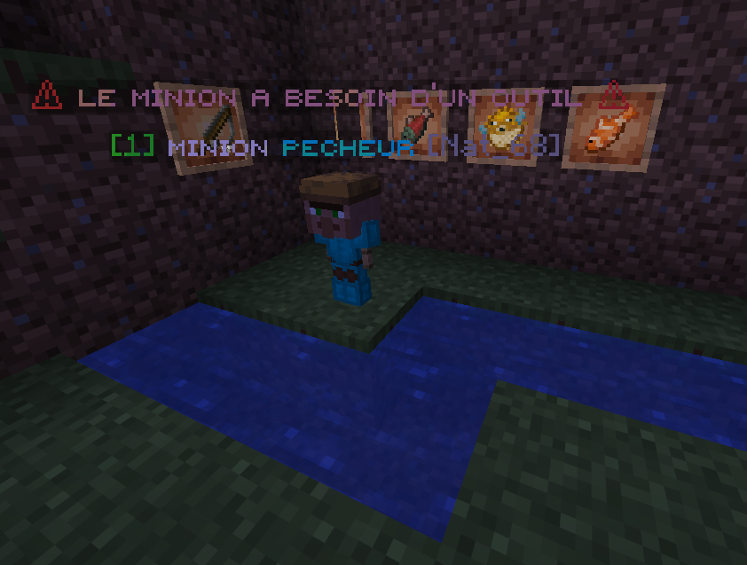
Ce minion est particulièrement utile près des coffres, où il gère automatiquement les ventes.
Il utilise un arc ou une arbalète comme objet principal, sans consommation de durabilité.
Avec la progression des niveaux, il devient plus performant grâce à la réduction du temps entre chaque vente, à l’augmentation du stockage d’argent et à un multiplicateur qui optimise vos gains.
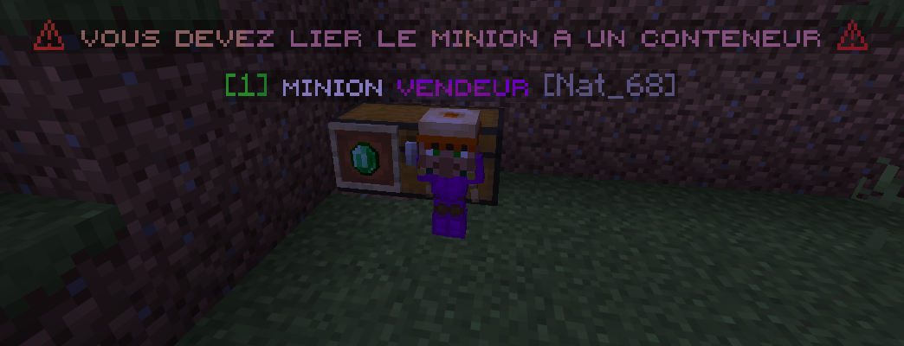
Ce minion est particulièrement utile près des coffres, où il effectue automatiquement le craft des objets.
Il utilise une canne à pêche comme objet principal, sans consommation de durabilité.
En montant de niveau, son efficacité augmente grâce à la réduction du temps entre chaque craft, permettant d’accélérer la production et d’optimiser le travail du minion, permettant d’accélérer la production et d’optimiser le travail du minion.
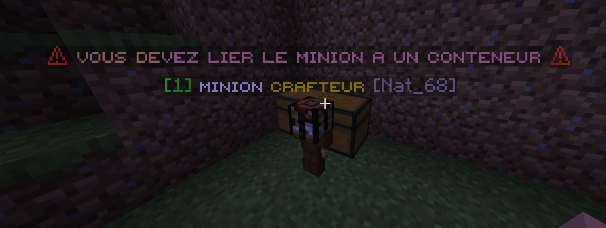
Ce minion est particulièrement utile dans les endroits avec des items au sol, où il collecte automatiquement les objets. Il utilise une pelle comme objet principal, sans consommation de durabilité.
Avec la progression des niveaux, il gagne en efficacité grâce à la réduction du temps entre chaque collecte et à l’augmentation du rayon de collecte, rendant la collecte plus rapide et étendue.
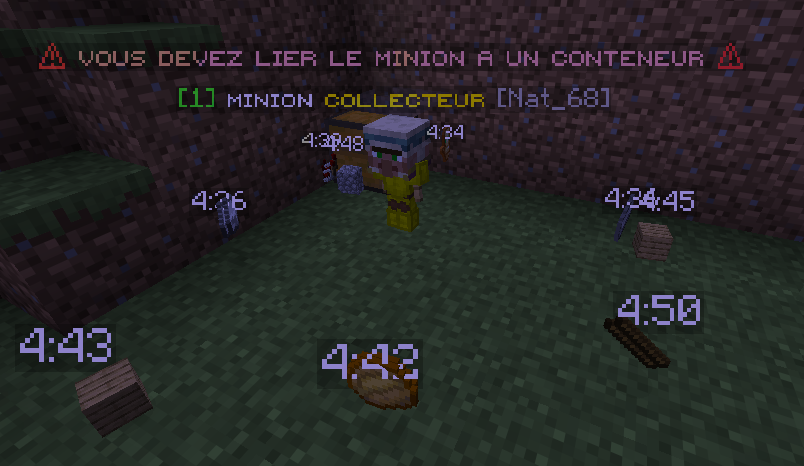